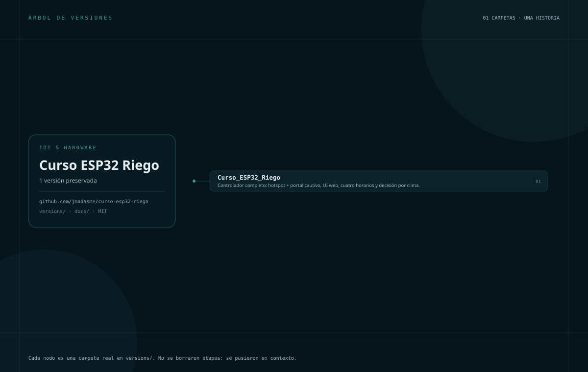

Curso_ESP32_Riego
27 archivosControlador completo: hotspot + portal cautivo, UI web, cuatro horarios y decisión por clima.
Ver carpetaUn controlador de riego ESP32-S3 con portal cautivo, cuatro horarios y decisión por pronóstico de lluvia.

Proyecto docente y funcional: el ESP32-S3 levanta un hotspot, sirve una interfaz web responsive, programa hasta cuatro riegos diarios y consulta OpenWeatherMap para no regar si va a llover.
Los temporizadores de riego riegan igual llueva o no, y configurarlos obliga a un manual, una app o un técnico.
Un portal cautivo que se abre solo al conectarse, una interfaz web clara y una consulta de clima que cancela el riego cuando no hace falta.
Controlador de riego sobre ESP32-S3 con portal cautivo, cuatro horarios diarios, persistencia en EEPROM y consulta de lluvia a OpenWeatherMap. Un curso completo que va del hotspot al relé que mueve la bomba.
Controlador de riego sobre ESP32-S3 con portal cautivo, cuatro horarios diarios, persistencia en EEPROM y consulta de lluvia a OpenWeatherMap. Un curso completo que va del hotspot al relé que mueve la bomba.
La clave de OpenWeatherMap y la red WiFi se configuran en local; el repositorio no incluye credenciales.
Cada carpeta conserva una etapa del proyecto. No se borraron las anteriores: se pusieron en contexto.
Controlador completo: hotspot + portal cautivo, UI web, cuatro horarios y decisión por clima.
Ver carpetaControlador de riego sobre ESP32-S3 con portal cautivo. El equipo levanta un punto de acceso, sirve una interfaz web al navegador del teléfono, guarda hasta cuatro horarios diarios en EEPROM y consulta OpenWeatherMap para cancelar el riego cuando hay probabilidad de lluvia. Un relé gobierna la bomba con un límite de 120 minutos.
Está pensado como proyecto docente y como solución doméstica para un huerto o jardín, sin aplicación móvil ni configuración por cable. Importa porque cubre el ciclo completo —hardware, persistencia, interfaz, clima y decisiones de seguridad— y porque declara sus límites: una sola zona, sin OTA, sin reset de fábrica y con un modo seguro que riega si la API falla.
El README original de la versión de referencia, completo.
Riego Inteligente ESP32-S3 es un sistema embebido de código abierto que automatiza el riego de cultivos usando un microcontrolador ESP32-S3. El sistema combina un hotspot WiFi con portal cautivo, una interfaz web responsive, un programador de hasta 4 horarios diarios y una consulta meteorológica en tiempo real a OpenWeatherMap para decidir inteligentemente si regar o esperar la lluvia.
Ideal para huertos urbanos, invernaderos domésticos, jardines y proyectos de agricultura de precisión de bajo costo.
El sistema opera bajo tres principios fundamentales:
El ESP32-S3 gobierna un relé electromecánico conectado a una bomba de agua mediante una señal digital (HIGH/LOW) en un pin GPIO. A diferencia de un temporizador convencional, el sistema usa millis() para contar el tiempo de activación sin bloquear el flujo del programa. Esto permite atender el servidor web, el DNS y otras tareas simultáneamente.
GPIO HIGH → Bobina del relé energizada → Contacto cerrado → Bomba activa
GPIO LOW → Bobina desenergizada → Contacto abierto → Bomba inactiva
Un mecanismo de seguridad limita la activación a 120 minutos máximo para evitar daños por operación continua.
El sistema obtiene la hora exacta desde pool.ntp.org a través de internet. Con la hora sincronizada, compara el momento actual contra los horarios configurados por el usuario. Sin NTP, el programador de riego permanece inactivo.
Antes de activar el riego programado, el sistema consulta la API OneCall de OpenWeatherMap enviando las coordenadas del cultivo. La API devuelve un JSON con la probabilidad de precipitación (pop) para la próxima hora. Si la probabilidad supera el 90%, el sistema salta el riego para aprovechar el agua de lluvia.
ESP32 ──HTTP GET──> api.openweathermap.org ──JSON──> ESP32
│ │
└── pop < 0.9? ──Sí──> Activar relé ──> Bomba ON │
└──No──> Saltar riego ──> Log │
| Icono | Característica | Descripción |
|---|---|---|
| 🌐 | Modo AP+STA | Hotspot WiFi propio + conexión a internet simultánea |
| 🔄 | Captive Portal | DNS spoofing que redirige todo el tráfico al ESP32 |
| 🖥️ | Interfaz Web Responsive | Dashboard, formularios y actualización en tiempo real vía AJAX |
| 📅 | Programador de 4 Horarios | Riego diario configurable con hora y duración |
| ☁️ | Verificación Climática | Consulta OpenWeatherMap antes de cada riego |
| 💾 | Persistencia EEPROM | Configuración guardada tras reinicios con checksum de integridad |
| ⚡ | Control de Relé Seguro | Timer no bloqueante con límite de 120 minutos |
| 🕐 | Sincronización NTP | Hora exacta vía internet para ejecución precisa |
| 🚿 | Riego Manual | Activación forzada desde la web |
| 📊 | Dashboard en Tiempo Real | Estado del relé, clima, tiempo restante y últimas acciones |
El sistema sigue este flujo desde que se enciende hasta que riega automáticamente:
Alimenta el ESP32-S3 vía USB (5V) o fuente externa. El sistema inicia inmediatamente.
Busca en tu teléfono o PC la red WiFi Riego-Hortaliza con contraseña 12345678 y conéctate.
Abre cualquier navegador. El captive portal redirige automáticamente al dashboard del sistema en http://192.168.4.1.
En la sección Configuración, ingresa el SSID y contraseña de tu red local para que el ESP32 acceda a internet. Sin esto, el sistema funciona como hotspot pero sin clima ni NTP.
Obtén una API Key gratuita en OpenWeatherMap e ingrésala junto con las coordenadas de tu cultivo. Si no configuras clima, el sistema riega siempre según los horarios.
En la sección Horarios, configura hasta 4 momentos del día para regar. Define hora, minuto y duración (1-120 min). Habilita/deshabilita cada programa con un toggle.
A la hora programada, el sistema verifica automáticamente:
¿Hay horario habilitado que coincida con la hora actual?
└── Sí ──> ¿Hay API de clima configurada e internet?
├── Sí ──> ¿Probabilidad de lluvia < 90%?
│ ├── Sí ──> ACTIVAR RELÉ (riegos)
│ └── No ──> SALTAR (aprovecha lluvia)
└── No ──> ACTIVAR RELÉ (modo seguro)
El dashboard web se actualiza automáticamente cada 5 segundos mostrando: - Estado del relé (ACTIVO/INACTIVO) - Tiempo restante de riego - Hora actual sincronizada vía NTP - Clima y probabilidad de lluvia - Última acción registrada
| Componente | Pin ESP32-S3 | Conexión | Notas |
|---|---|---|---|
| Relé (bomba) | GPIO 4 (configurable) | Señal IN del relé → GPIO 4 | Activo en HIGH |
| LED indicador | GPIO 2 | Ánodo → GPIO 2, Cátodo → GND vía 220Ω | Indicador de estado |
| Alimentación ESP32 | 5V / USB | USB o pin 5V a fuente | 5V DC, 2A recomendado |
| Alimentación relé | VCC → 5V, GND → GND | Relé de 5V compatible con ESP32 | No alimentar desde pin 3.3V |
| Bomba de agua | NA/COM del relé | COM → Fuente 12V, NA → Bomba | Carga inductiva, usar flyback diode |
┌──────────────────────────────────────┐
│ ESP32-S3 DevKit │
│ │
│ USB ── 5V (alimentación) │
│ GND ── GND (común) │
│ │
│ GPIO 4 ────┬───► IN (Relé) │
│ GPIO 2 ────┼───► Ánodo LED │
│ │ │
│ 3.3V ──────┘ │
└──────────────────────────────────────┘
│ │
│ │
┌───────▼────┐ ┌────▼───────────┐
│ Módulo │ │ LED + 220Ω │
│ Relé 5V │ │ (simulación) │
│ │ │ │
│ VCC ◄── 5V │ │ GPIO 2 ──► LED │
│ GND ◄── GND│ │ │ │
│ IN ◄── GP4│ │ GND │
└───────┬────┘ └──────────────────┘
│
┌───────▼──────────┐
│ Bomba Agua │
│ 12V DC │
│ │
│ (+) ◄── 12V │
│ (-) ◄── GND │
└──────────────────┘
─── Fuente 5V 2A ────┬──── ESP32 USB
│
└──── Módulo Relé VCC
─── Fuente 12V ────────── Relé COM ── NO ── Bomba (+)
Relé GND ──────── Bomba (-)
Un aficionado tiene un huerto de tomates y lechugas en su terraza. Configura: - Horario 1: 07:00 — 15 minutos (mañana) - Horario 2: 19:00 — 10 minutos (tarde) - API clima: Configurada con coordenadas de su ciudad - Resultado: En días lluviosos, el sistema salta automáticamente el riego. En días secos, riega puntualmente. El usuario monitorea desde su celular conectado al hotspot.
Un productor rural tiene un invernadero sin acceso a internet. Configura: - Solo hotspot local (sin WiFi cliente, sin API clima) - Horario 1: 06:00 — 20 minutos - Horario 2: 12:00 — 15 minutos - Horario 3: 18:00 — 20 minutos - Resultado: El sistema riega estrictamente por horario sin verificación climática. Ideal donde no hay conectividad.
Para evitar evaporación, un jardinero configura riegos nocturnos: - Horario 1: 04:00 — 30 minutos (madrugada, menor evaporación) - Horario único: Evita el riego diurno - Riego manual: Para días especialmente secos, activa riego extra desde la web - Resultado: Optimiza el consumo de agua regando en horas frescas.
Un estudiante simula el sistema solo con un LED: - Conecta un LED al GPIO 4 en lugar del relé - El LED parpadea indicando cuándo se "regaría" - Ideal para aprender IoT sin hardware de alta potencia - Resultado: Mismo comportamiento pero visual y seguro.
RAIN_THRESHOLD)Definido en config.h línea 16:
#define RAIN_THRESHOLD 90 // Porcentaje de lluvia para saltar riego
MAX_IRRIGATION_MIN)Definido en config.h línea 15:
#define MAX_IRRIGATION_MIN 120 // Duración máxima en minutos
WIFI_TIMEOUT_MS)#define WIFI_TIMEOUT_MS 10000 // 10 segundos para conectar a WiFi
NTP_TIMEOUT_S)#define NTP_TIMEOUT_S 30 // 30 segundos máximo esperando NTP
En esp32_riego_automatizado.ino línea 148:
setenv("TZ", "CLT", 1); // Chile Standard Time (UTC-3)
Cambia "CLT" por tu zona horaria. Ejemplos: "EST" (UTC-5), "CET" (UTC+1), "ART" (UTC-3 Argentina).
| Riesgo | Medida |
|---|---|
| Cortocircuito | Usa cableado adecuado y protege conexiones con termoencogible |
| Sobrecarga | El relé soporta 10A máx. No conectes bombas que excedan este límite |
| Agua | Mantén la electrónica en una caja estanca IP65 o superior |
| Alimentación | Usa fuentes certificadas. No alimentes el relé desde el pin 3.3V del ESP32 |
| Medida | Descripción |
|---|---|
| Límite de 120 minutos | Evita que la bomba funcione sin agua o se sobrecaliente |
| Anti-repetición | Un mismo horario no se ejecuta dos veces el mismo día |
| Modo seguro clima | Si la API falla, el sistema riega por precaución (no asume que lloverá) |
| Aspecto | Detalle |
|---|---|
| AP con contraseña | La red hotspot está protegida con 12345678 (cambiar para producción) |
| Red local | El servidor HTTP solo es accesible desde la red del hotspot |
| API Key | La clave de OpenWeatherMap se almacena en EEPROM, no se expone en URLs |
Curso_ESP32_Riego/
│
├── README.md ← Este archivo
├── PLAN.md ← Plan de implementación (documentación interna)
├── AUDIT_REPORT.md ← Reporte de auditoría (documentación interna)
│
├── codigo/ ← Código fuente del firmware
│ └── esp32_riego_automatizado/
│ ├── esp32_riego_automatizado.ino ← Archivo principal (setup + loop)
│ ├── config.h ← Constantes, estructuras y umbrales
│ ├── CaptivePortal.h ← Captive portal con DNS spoofing
│ ├── WebInterface.h ← Servidor web + HTML/CSS/JS embebido
│ ├── Scheduler.h ← Lógica de programación horaria
│ ├── WeatherCheck.h ← Cliente HTTP para OpenWeatherMap
│ ├── RelayControl.h ← Control no bloqueante del relé
│ └── Storage.h ← Persistencia en EEPROM con checksum
│
├── curso/ ← Material didáctico del curso (15 horas)
│ ├── 00_introduccion.md
│ ├── 01_wifi_hotspot.md ← WiFi AP+STA en ESP32
│ ├── 02_captive_portal.md ← DNS spoofing y captive portal
│ ├── 03_servidor_web.md ← Servidor web y HTML/CSS responsive
│ ├── 04_eeprom_persistencia.md ← EEPROM y persistencia de datos
│ ├── 05_programador_riego.md ← Programador de horarios
│ ├── 06_api_clima.md ← API REST de OpenWeatherMap
│ ├── 07_rele_bomba.md ← Control de relé y bomba
│ ├── 08_proyecto_integracion.md ← Integración final del proyecto
│ ├── 09_laboratorios_practicos.md ← Laboratorios hands-on
│ ├── 10_ejercicios_propuestos.md ← Ejercicios con solución
│ └── 11_guia_referencia_rapida.md ← Guía de referencia rápida
│
└── docs/ ← Documentación extra
├── datasheet_usuario.md ← Especificaciones técnicas detalladas
├── explicacion_codigo.md ← Arquitectura y explicación del firmware
├── diagrama_conexion.md ← Guía paso a paso de conexiones
└── troubleshooting.md ← Solución de problemas y FAQ
MIT License — Este proyecto es de código abierto y puedes usarlo, modificarlo y distribuirlo libremente.
MIT License
Copyright (c) 2026
Permission is hereby granted, free of charge, to any person obtaining a copy
of this software and associated documentation files (the "Software"), to deal
in the Software without restriction, including without limitation the rights
to use, copy, modify, merge, publish, distribute, sublicense, and/or sell
copies of the Software, and to permit persons to whom the Software is
furnished to do so, subject to the following conditions:
The above copyright notice and this permission notice shall be included in all
copies or substantial portions of the Software.
| Rol | Persona |
|---|---|
| Idea original y desarrollo | Wander C. |
| Implementación del firmware | Pipeline de desarrollo automatizado |
| Material didáctico | Pipeline de desarrollo automatizado |
| Documentación | Pipeline de desarrollo automatizado |
Agradecimientos especiales a: - OpenWeatherMap por su API gratuita de datos meteorológicos - Espressif por el increíble ecosistema ESP32 - Comunidad Arduino por las librerías y el soporte - Contribuidores open-source del sector agrícola IoT
Las primeras versiones existen para que estos errores no se repitan: cada una dejó una decisión de diseño verificable.
La versión publicada controla un único relé. Ampliar a varias zonas exige modificar RelayControl.h, sumar configuración en EEPROM y revisar que la estructura no supere los 512 bytes disponibles. El FAQ lo declara de forma explícita y no existe soporte multizona en el código actual.
Actualizar el firmware requiere cable USB, y no hay un botón de reset en la interfaz web: recuperar los valores por defecto implica recompilar o cargar un sketch temporal que llame a clearConfig(). Ambas ausencias están reconocidas en el documento de troubleshooting.
El temporizador del relé se apoya en millis(), que se desborda alrededor de los 50 días de encendido continuo. La documentación recomienda reiniciar el equipo cada 30 días en lugar de corregir la comparación de tiempos en el código, de modo que la limitación se mitiga con una tarea manual.
Si la API de clima falla por falta de internet, clave inválida o timeout, el sistema asume que no lloverá y ejecuta el riego. La decisión prioriza no dejar el cultivo sin agua, pero convierte un error de red en consumo innecesario.
Seis criterios con la misma escala en todo el catálogo, para comparar sin marketing.
No. El portal cautivo y la web se abren desde el navegador del teléfono.
El riego por horario sigue funcionando; la decisión por lluvia se omite.
Un relé en la versión publicada. Ampliar requiere ajustar el código y el hardware.
No está diseñado para eso: es riego por horario, no control de nutrientes.
Sí, revisando pines y el FQBN; el proyecto apunta a ESP32-S3.
Usá esta familia como base para curso esp32 riego. Está documentada para que puedas entenderla, ejecutarla y continuarla sin adivinar.